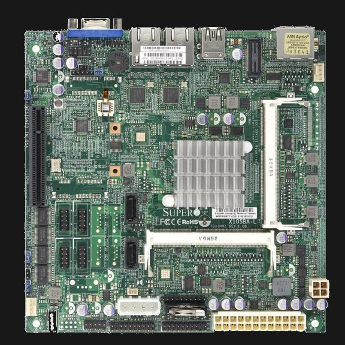
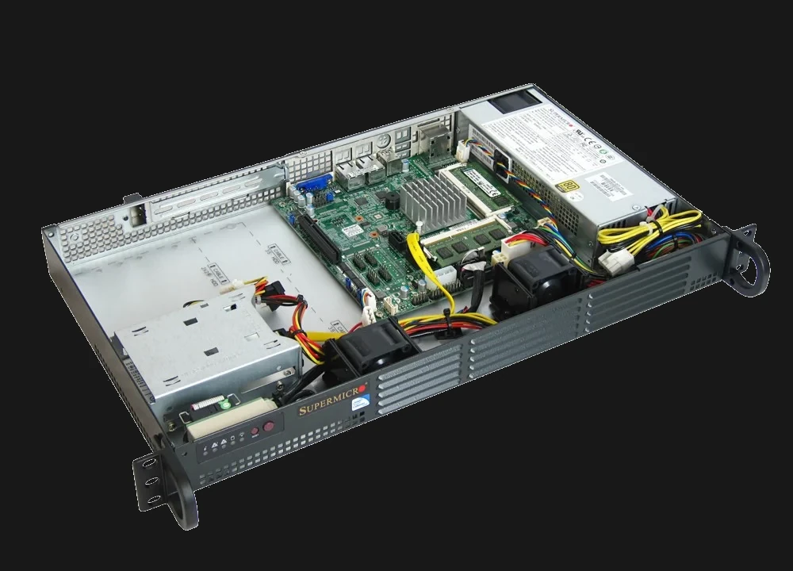

BytesOfProgress
New (to me) Webserver
18th April 2024 / 09:30 PM
I got a new-to-me webserver! It is a SuperMicro X10SBA-L Mainboard inside a SuperMicro 1U case.

The SuperMicro X10SBA-L uses an energy-efficient Intel Celeron J1900 Quad-Core processor with low power consumption. It is an excellent base for a power-efficient web server or embedded applications. Its quad-core architecture allows for efficient multitasking and handling of web server workloads, while its low power consumption makes it ideal for continuous operation without significantly impacting energy costs.
I now set it up with Nginx Virtual Hosts instead of Proxmox VMs to make it more efficient.
back